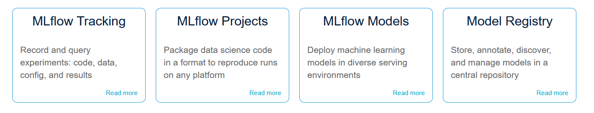

MLFlow
MLflow is an open source platform to manage the ML lifecycle, including experimentation, reproducibility, deployment, and a central model registry. MLflow currently offers four components:

Read more here: https://mlflow.org/Helm installation into OpenShift namespace
Pre-requisites
- Install the "Crunchy Postgres for Kubernetes" operator (can be found in OperatorHub) - To store the MLFlow config
- Install the "OpenShift Data Foundation" operator (can be found in OperatorHub) - To provide S3 storage for the experiments and models
Install
<Create an OpenShift project, either through the OpenShift UI or 'oc new-project project-name'>
helm repo add strangiato https://strangiato.github.io/helm-charts/
helm repo update
<Log in to the correct OpenShift project through 'oc project project-name'>
helm install mlflow-server strangiato/mlflow-server
Test MLFlow
- Go to the OpenShift Console and switch to Developer view.
- Go to the Topology view and make sure that you are on the MLFlow project.
- Check that the MLFlow circle is dark blue (this means it has finished deploying).
- Press the "External URL" link in the top right corner of the MLFlow circle to open up the MLFlow UI.
- Run
helm test mlflow-serverin your command prompt to test MLFlow. If successful, you should see a new experiment called "helm-test" show up in the MLFlow UI with 3 experiments inside it.
Adding MLFlow to Training Code
import mlflow
from sklearn.linear_model import LogisticRegression
# Set tracking URI
mlflow.set_tracking_uri(“https://<route-to-mlflow>”)
# Setting the experiment
mlflow.set_experiment("my-experiment")
if __name__ == "__main__":
# Enabling automatic logging for scikit-learn runs
mlflow.sklearn.autolog()
# Starting a logging run
with mlflow.start_run():
# train
Source Code
MLFlow Server Source Code: https://github.com/strangiato/mlflow-server
MLFlow Server Helm Chart Source Code: https://github.com/strangiato/helm-charts/tree/main/charts/mlflow-server
Demos
- Credit Card Fraud Detection pipeline using MLFlow together with RHODS: Demo